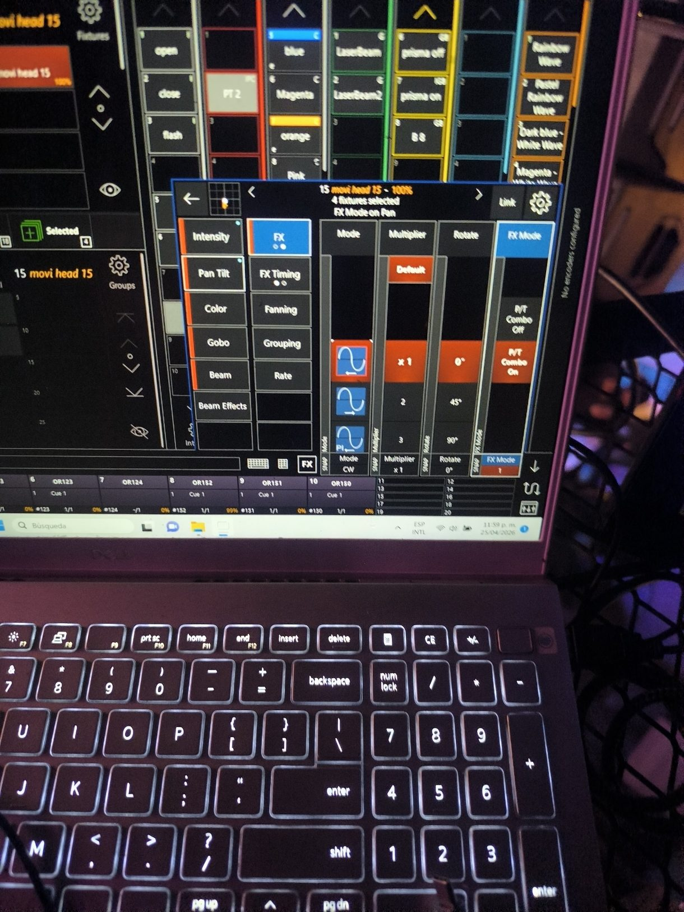

- 3programas que antes no se hablaban
- 4protocolos: OSC, Art-Net, UDP y Socket.IO
- 12/12pruebas automáticas en verde
- 1ejecutable: se instala copiando una carpeta
Lo que pidió el cliente
En el bar, el video (Resolume), las luces (Onyx) y el audio (Reaper) corrían en programas y equipos separados. Cada cambio de ambiente necesitaba a alguien en cada consola, y las luces no tenían idea de lo que pasaba en la pantalla.
- "Que las luces reaccionen a la música"Los estrobos siguen en tiempo real a la capa de video que se mueve con la música
- "Que sigan lo que pasa en la pantalla"Loop lee el color del video y lo muestra en el panel
- "No ir de consola en consola"Escenas, flashes y pistas desde una tablet, o desde varias a la vez
De punta a punta, solo
- LevantamientoHablé con el dueño y bajé el pedido a reglas concretas.
- ArquitecturaUn programa en el medio que traduce entre protocolos.
- CódigoBackend en TypeScript, panel web y pruebas.
- Programación de lucesCuelists y efectos en Onyx para que respondieran.
- InstalaciónMontaje en el bar y ajuste durante los shows.
- ProductoLo llevé a una v3 que otra empresa pudiera usar.
La prueba
En el laboratorio, antes de instalarlo: suena la música, Resolume pone el video y en la vista 3D de Onyx las luces responden.

25 de abril, en el bar
Programando en Onyx los efectos de las cabezas móviles: la otra mitad del trabajo. El software manda la orden; la consola tiene que estar lista para responder con algo que se vea bien.
De prototipo a producto
- 13 mar 2026
Prueba en laboratorio con las tres consolas conectadas.
- 14 mar 2026
v1.0.0: primera versión funcionando en el bar.
- Abril
Programación de luces y ajuste en el sitio, con shows en vivo.
- 8 nov 2026
v3.0.0: producto para Multiaudio. Configuración en un archivo, panel sin internet, PIN, estado compartido entre tablets, pruebas y un .exe listo para copiar.
Un traductor en el medio
Cada programa habla su propio idioma. Loop los escucha, aplica las reglas del show y mantiene un solo estado que ven todas las tablets.
así siguen las luces al video · src/show.ts
/** La opacidad de la capa de video maneja los estrobos. */
onOpacity(opacity: number): void {
this.markResolumeOnline();
if (!this.state.automation) return;
const level = opacityToDmx(opacity);
if (level === this.lastStrobe) return; // no inundar la red
this.lastStrobe = level;
this.lights.setLevel(this.config.onyx.strobeCuelist, level);
}y así se comprueba · npm test
✔ la opacidad mueve los estrobos solo si cambia y si la automatización está activa
✔ los botones usan los comandos de la configuración
✔ rechaza botones y pistas que no existen
✔ el estado de mute es uno solo para todas las tablets
…
ℹ tests 12 pass 12 fail 0Pensado para un show en vivo
En un show no hay "volver a intentar". Estas decisiones salen de eso:
- 01La tablet manda botones, no comandos. El panel dice "escena 3" y el servidor decide qué sale según la configuración. Alguien en el wifi del club no puede mandarle cualquier cosa a las luces.
- 02Nada destructivo al arrancar. Si el PC se reinicia en pleno show, Loop vuelve sin tocar lo que está en escena. Limpiar las luces pide un segundo toque.
- 03Funciona sin internet. El panel no descarga nada de afuera: en un club la red suele ser solo local.
- 04Un paquete mal formado no tumba el show. Cada dato que llega por la red se valida; un mensaje OSC roto se descarta en vez de cerrar el programa.
- 05La lógica no depende de los equipos. Las reglas hablan con "luces" y "mezcla", no con Onyx o Reaper. Por eso se prueban sin equipos y se puede cambiar de consola sin reescribir el show.
Ficha técnica
- Lenguaje
- TypeScript sobre Node.js.
- Protocolos
- OSC y Art-Net de entrada desde Resolume; UDP hacia Onyx y el PC de audio; OSC hacia Reaper; Socket.IO hacia las tablets.
- Dependencias
- Solo 3 en producción: express, osc y socket.io. El lector de Art-Net está escrito a mano.
- Pruebas
- 12 con el test runner nativo de Node: reglas del show, configuración y paquetes Art-Net.
- Entrega
- Un solo ejecutable (esbuild + Node SEA) con un JSON de configuración que se valida al arrancar.
- Seguridad
- PIN opcional en el panel, solo botones definidos y validación de todo lo que llega por la red.
- Clientes
- Un bar con música en vivo, donde se instaló, y Multiaudio, empresa de producción de eventos que compró el software.
¿Tienes equipos que no se hablan?
Integro hardware y software de eventos, y automatizo procesos de negocio. Escríbeme y lo vemos.